William Jackson
Club websites, hackathon builds and other things I have made.
Club websites and tools
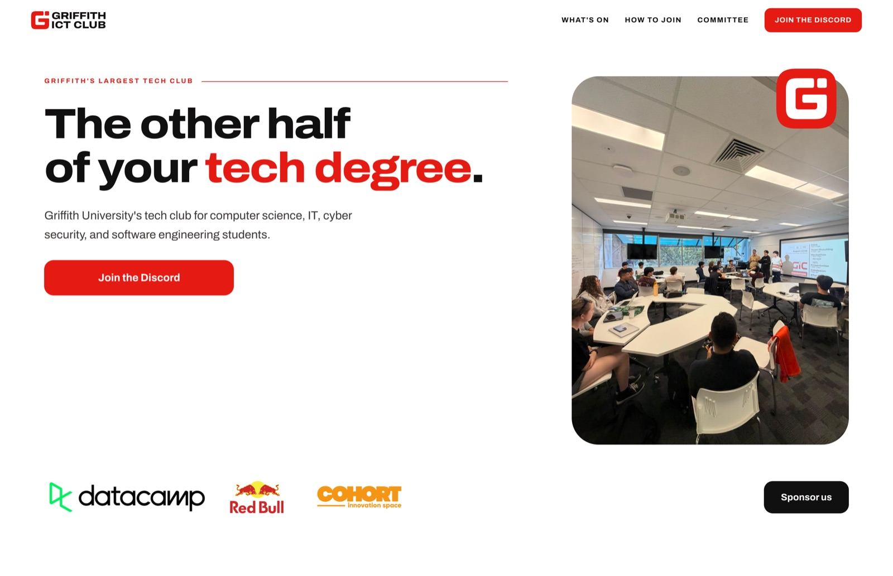
Griffith ICT Club
2026The website and club tools for Griffith University's ICT Club. Events, membership, sponsors and committee information, plus Discord bots for invites, booster perks and reimbursements.
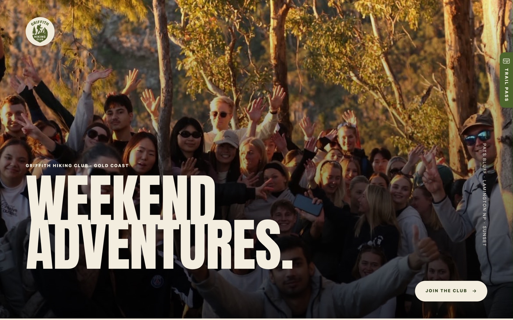
Griffith Hiking Club
2026Hikes, club photos and offline attendance for Griffith University's Hiking Club. Most trails have no reception, so members save a Trail Pass whose QR code carries their details, and leaders scan them in and out from a phone that never needs to go online.
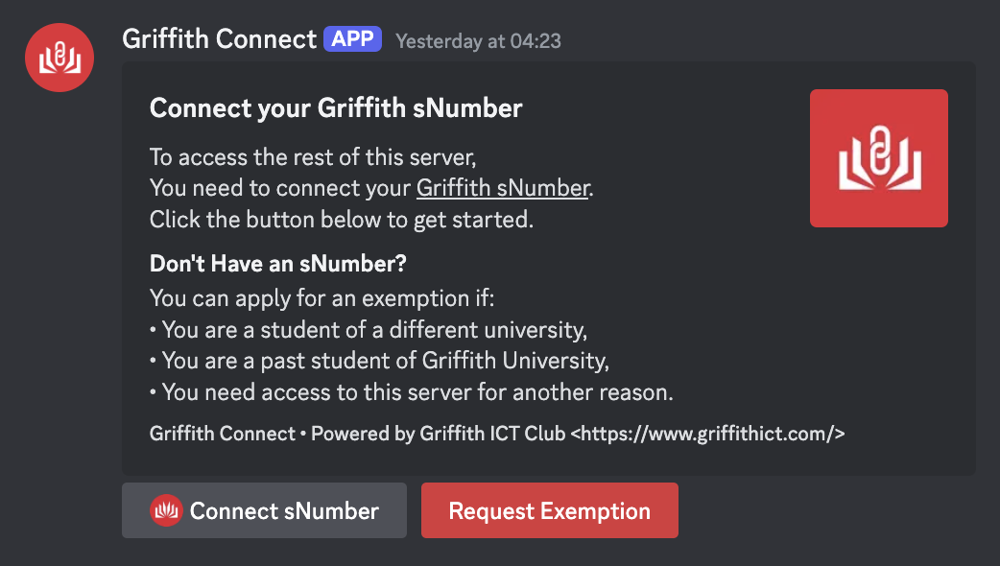
Griffith Connect
Mar 2025A Discord bot that links Griffith student numbers to Discord accounts so people in the club servers are who they say they are.
Hackathons
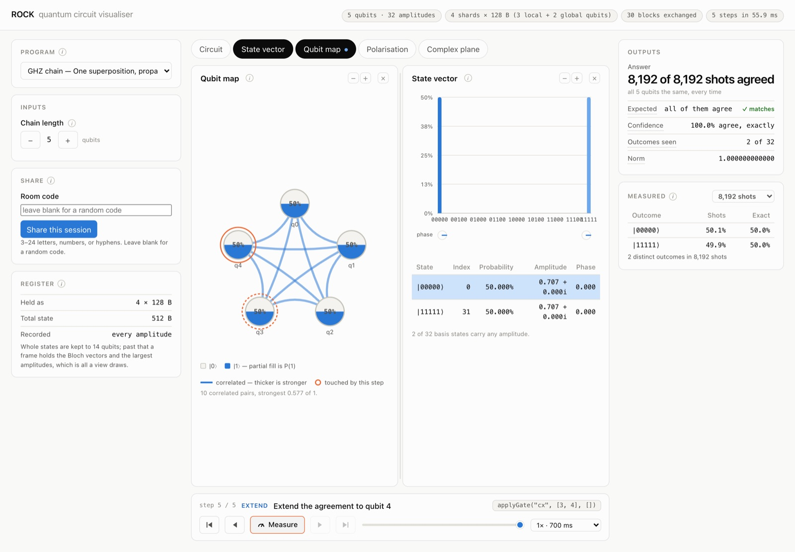
Distributed Quantum Computing
Aug 2026Quantum simulation spread across a network of browsers. Each peer runs part of a state-vector simulator, and WebRTC carries amplitude data between them so gates and entanglement work across machines. Built with a team of three for the 2026 QUT Code Network Hackathon.
-
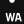
Cogni.lol
Nov 2025Turns PDFs into courses with AI summaries, lessons, quizzes and a study coach. Second place at the 2025 Tanda Hackathon, built with William Qu and Yiming He.
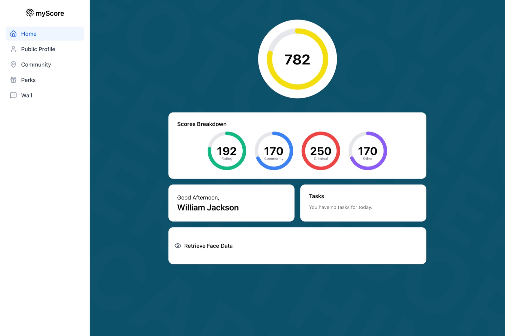
My Score
Aug 2025A social-score experiment with peer ratings, community scores and score-based perks. Built with Yiming He for the 2025 QUT Code Network Hackathon.
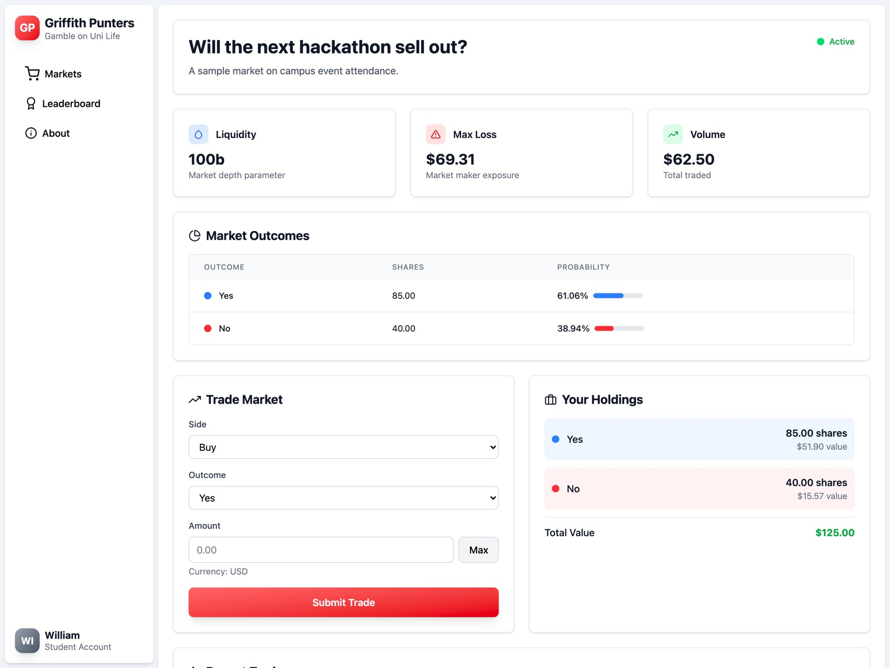
Griffith Punters
Jun 2025A prediction market for university life. Trade outcome shares, watch the probabilities shift and compare balances on the leaderboard. Built solo for the 2025 Griffith ICT Club Hackathon.
Other
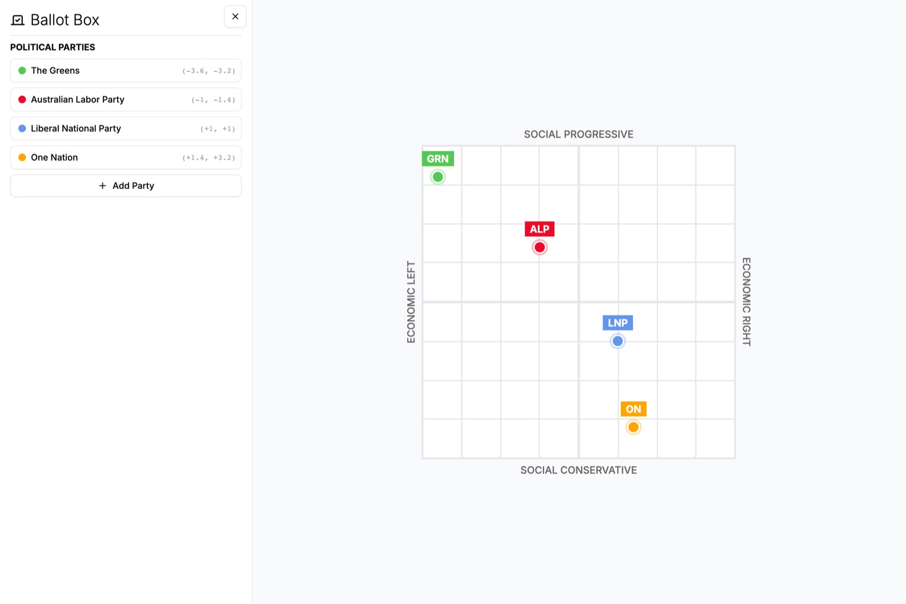
Ballot Box
Apr 2025A recreation of the ABC's political compass. Add and edit parties, then compare their positions on the economic and social axes.
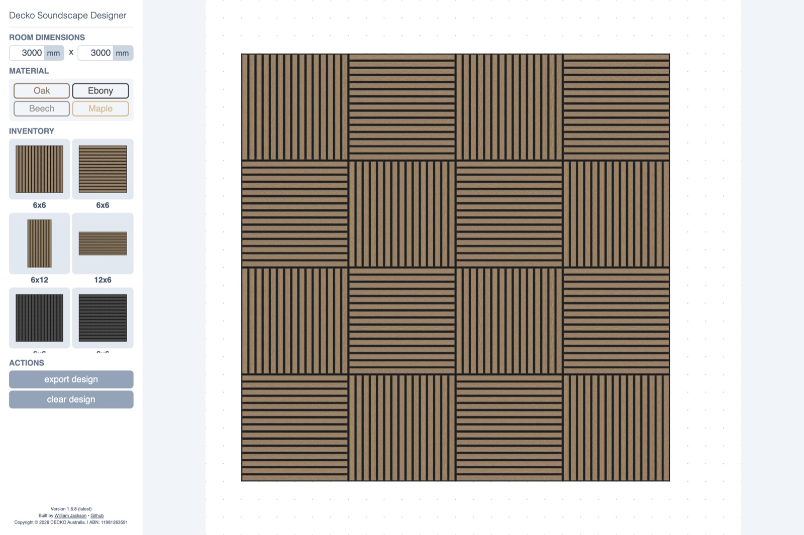
DECKO Soundscape Designer
Oct 2024A visual acoustic-panel designer built in high school for DECKO. Set the wall dimensions, drag panels into place, then export the layout with panel and box quantities.
-
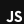
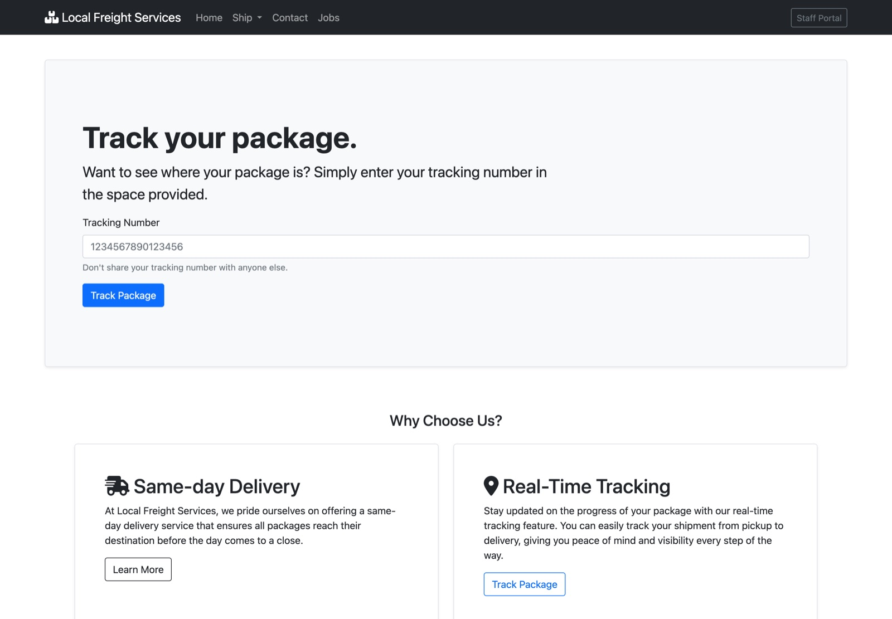
Local Freight Services
Jun 2023A website for a fictional freight company, built for my high-school Digital Solutions class, with a pricing calculator and a jobs page.
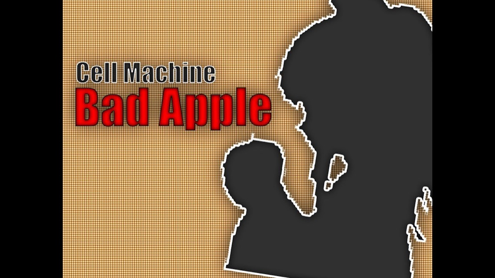
CellVID
Aug 2021Turns video frames into mosaics of Cell Machine sprites, then stitches them back into a video.
Open source
-
Seven merged pull requests, including the version two rewrite and the workflow that publishes each release to PyPI. Listed in the repository's code owners.
-
Momos 26 stars
Reworked the levelling algorithm behind user ranks, added owner icons to communities and fixed a badge tooltip that wrapped over several lines.
-
Rhino Editor 337 stars
Tracked down a bug where a document's empty paragraphs doubled their spacing every time it was saved and reloaded, then shipped the fix.